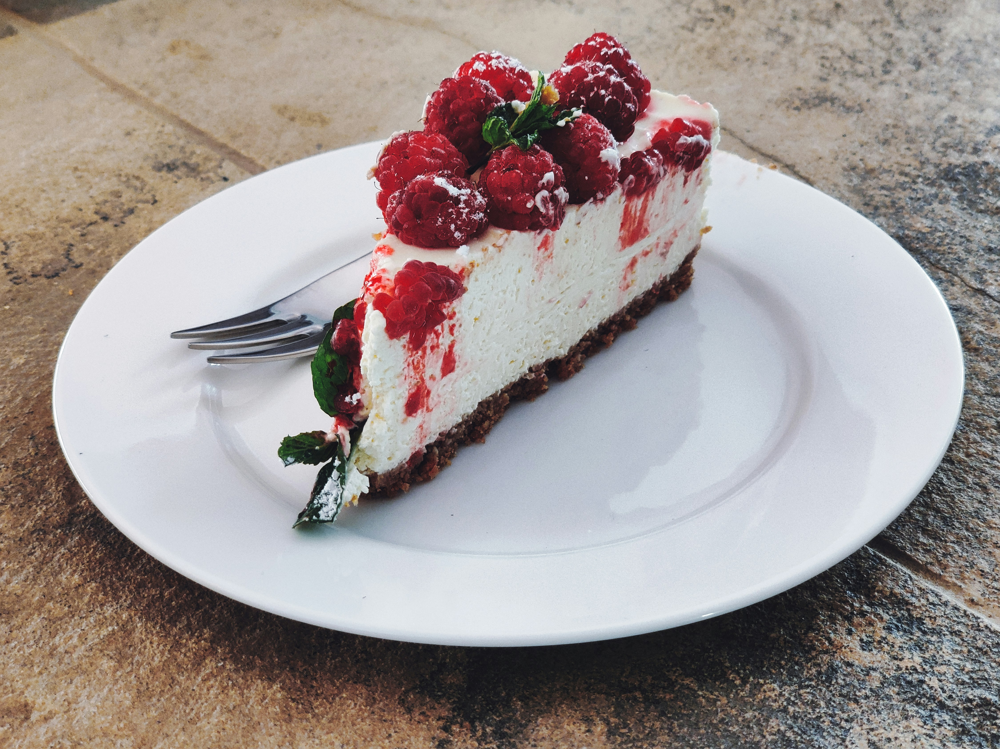

Strawberry Cake

Description
Strawberry cake is a cake that uses strawberry as a primary ingredient.[3] Strawberries may be used in the cake batter, atop the cake, and in the frosting. Strawberry cakes are typically served cold.
Ingredients
- Sugar
- Butter
- Jell-O
- Eggs
- Flour
- Baking powder
- Milk
- Strawberries
- Vanilla
Steps
- Beat the butter, sugar, and Jell-O together. Add the eggs.
- Combine the dry ingredients.
- Gradually the dry mixture into the wet mixture, alternating with the milk.
- Add the remaining ingredients and transfer the batter to prepared cake pans.
- Bake in the preheated oven until a toothpick comes out clean.